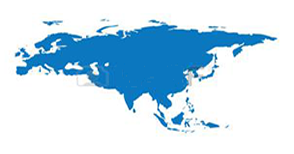
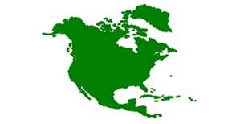
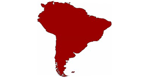
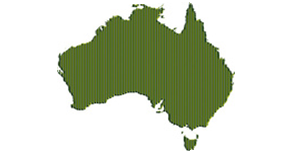

Евразия
Самый большой материк на Земле.
Площадь-54 759 млн.км².,что
составляет 36% площади суши.
Население 5 млрд.(2010),что составляет 3/4 населения всей планеты. Континент расположен в Северном полушарии между
примерно 9 з.д. и 169 з.д., при этом
часть островов Евразии находится в
Южном полушарии.Большая часть
континетальной Евразии лежит в
восточном полушарии,хотя крайние
западная и восточная оконечности...
Узнать больше

Северная Америка
один из шести материков планеты Земля, расположенный на севере Западного полушария Земли.Площадь Северной Америки без островов — 20,3 млн км², с островами — 24,3 млн км². По этим показателям она сопоставима с Советским Союзом. К островам Северной Америки относятся Гренландия (2,17 млн Население Северной Америки составляет более 500 млн человек, что составляет 7 % от населения мира. В пределах материка часто...
Узнать больше
Африка
второй по площади материк после Евразии, омывается Средиземным морем с севера, Красным — с северо-востока, Атлантическим океаном с запада и Индийским океаном с востока и юга. Африкой называется также часть света, состоящая из материка Африка и прилегающих островов. Площадь Африки без островов составляет 29,2 млн км², с островами — около 30,3 млн км², покрывая, таким образом, 6 % общей площади поверхности Земли и 20,4 % поверхности...
Узнать больше

Южная Америка
Один из шести материков планеты Земля, расположенный на юге Западного полушария. Омывается на западе Тихим океаном, на востоке — Атлантическим, на севере — Карибским морем, которое является естественным рубежом между двумя Америками. Панамский перешеек на северо-западе материка соединяет Южную Америку с Северной.
В состав Южной Америки также входят различные острова, большинство из которых принадлежит странам континента. Острова в бассейне...
Узнать больше
Антарктида
Антарктиды примерно совпадает с южным географическим полюсом. Антарктиду омывают воды Атлантического, Индийского и Тихого океанов. С 2000 года воды, омывающие Антарктиду к югу от 60° ю. ш., по решению Международной гидрографической организации предложено называть Южным океаном.
Площадь континента составляет около 14 107 000 км².
При этом средняя высота поверхности Антарктиды...
Узнать больше

Австралия
Континент,расположенный в
Восточном и Южном полушариях
Земли. Вся территория материка
является основной частью
государства австралия.Материк
входит в часть света Австралия и
Океания.Самый маленький и сухой
материк.
Узнать больше